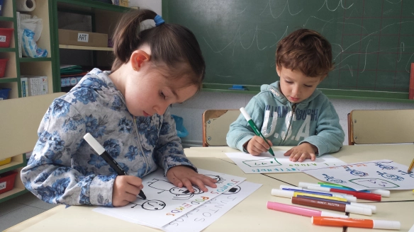

Creación de Belenes por los Alumnos
Fecha: 7 de noviembre de 2024
Los alumnos del Colegio Calasanz de Salamanca han trabajado arduamente durante las últimas semanas para crear impresionantes belenes navideños. Este proyecto, que fomenta la creatividad y el trabajo en equipo, ha sido una de las actividades más esperadas de la temporada navideña. Los estudiantes, bajo la supervisión de sus profesores de arte, han diseñado y construido belenes con materiales reciclados y decoraciones únicas, que representan escenas tradicionales de la Navidad.
Los belenes creados serán exhibidos en el colegio durante el mes de diciembre, y se invitará a las familias a visitarlos como parte de la celebración de la festividad.
Concurso de Relatos Cortos
Fecha: 8 de noviembre de 2024
El Colegio Calasanz de Salamanca ha lanzado su tradicional Concurso de Relatos Cortos, invitando a los estudiantes de todos los niveles a participar. Este concurso, que busca promover la creatividad literaria y la expresión personal, ha sido recibido con entusiasmo por los jóvenes escritores del colegio.
Los participantes tendrán la oportunidad de explorar temas de su elección y compartir sus escritos con la comunidad escolar. Los relatos serán evaluados por un jurado compuesto por profesores de lengua y literatura, y los mejores relatos se publicarán en la revista escolar.
La entrega de premios tendrá lugar a finales de noviembre, y se espera que sea una celebración de la imaginación y el talento de los estudiantes.
